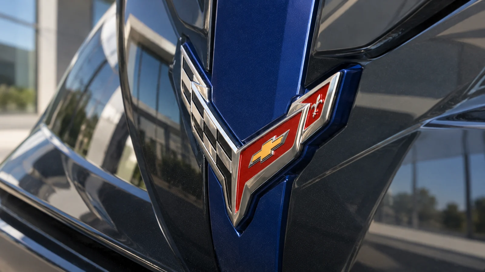
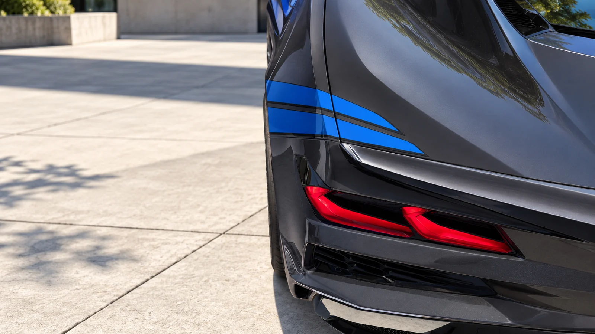

Two axles, two different jobs
A Corvette’s acceleration used to be a conversation about the engine behind its driver. The Grand Sport X makes the front axle part of that conversation. Its electric motor supplies another route to the road, while the rear wheels retain the work and character of a large naturally aspirated V8.
GM’s engineering announcement specifies a 6.7-liter LS6 V8 with 535 horsepower and 520 lb-ft of torque, working with an eight-speed dual-clutch transmission. The front electric motor contributes 186 horsepower; Chevrolet quotes 721 horsepower for the combined system. The motor’s torque should not simply be added to the engine’s figure to invent a system total. [2]
The arrangement creates a different set of questions from a conventional rear-drive Corvette. How does the front axle contribute as the car exits a corner? How much assistance is available after repeated hard use? And how clearly does the driver feel the transition? A power figure cannot settle any of them.

Claims and measurements belong in separate columns
| Chevrolet claim: 0–60 mph | 2.4 seconds |
|---|---|
| Car and Driver test: 0–60 mph | 2.3 seconds |
| Chevrolet claim: quarter-mile | 10.4 seconds at 131 mph |
| Car and Driver test: quarter-mile | 10.3 seconds at 131 mph |
Chevrolet publishes the claimed figures above. Car and Driver recorded the separately labeled test results and reported approximately 4,000 pounds of curb weight for its car. None is an AutoGlob measurement. [1] [3]
Those numbers establish that the front motor is far more than a badge. They do not establish that every owner can reproduce the launch. Surface preparation, tires, temperature and the publication’s timing method all influence a result. On a public road, visibility and available space matter more than tenths of a second.
The extra axle also does not remove the need for judgment in poor weather. Accelerating with more driven wheels and stopping on a low-grip surface are different tasks. Tires remain the contact between a very powerful machine and the road.
The tire comparison needs its own footnote
In Car and Driver’s testing, the Grand Sport X produced 1.08 g of lateral grip on summer tires, while the regular Grand Sport reached 1.18 g on Michelin Cup 2 R tires. The different tire specifications prevent those numbers from serving as a clean verdict on the two chassis. [3]
This is a familiar trap in performance comparisons. One car can appear to have superior cornering ability when a large part of the difference comes from its contact patches. A useful comparison should identify the tire model and condition, then examine the car’s responses as well as the maximum figure.
GM lists Magnetic Ride Control and carbon-ceramic brakes as standard equipment for the X. It also describes battery-management modes intended for sustained running or shorter bursts of assistance. These systems provide the tools for a broader operating range; their usefulness depends on the conditions and the driver’s priorities. [2]

What a buyer should test beyond the launch
A sensible demonstration begins at normal speeds. Check visibility at a junction, low-speed brake response, clearance on the route into your garage and how the suspension handles the broken section of your commute. These are the parts of the experience that an acceleration chart leaves out.
For track use, ask a different set of questions: tire availability, the cost of consumables and what happens to performance across repeated sessions. A short burst and an afternoon of running impose different demands. Match the specification to the work you expect it to do.
The Grand Sport X’s achievement is the scale of performance it places within an established Corvette shape. Its appeal will depend on whether the hybrid hardware improves the journeys that matter to its owner. The stopwatch provides compelling evidence of speed. A complete recommendation needs the rest of the road.
Sources & method
Checked October 12, 2026. Analysis is original; externally reported specifications and measurements are linked above. Generated imagery is illustrative, not documentary.